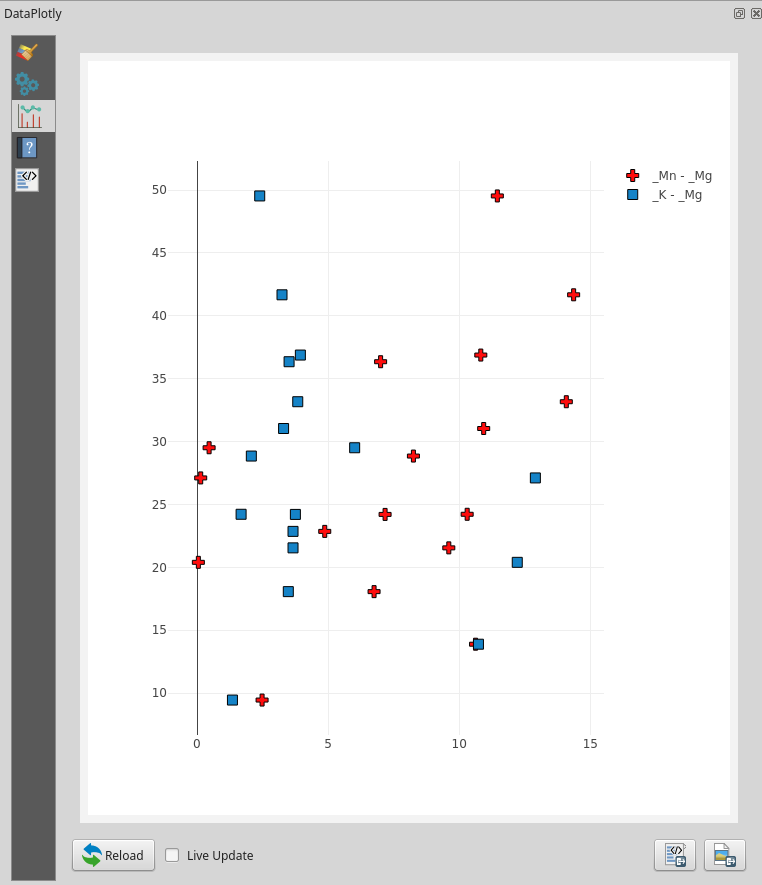
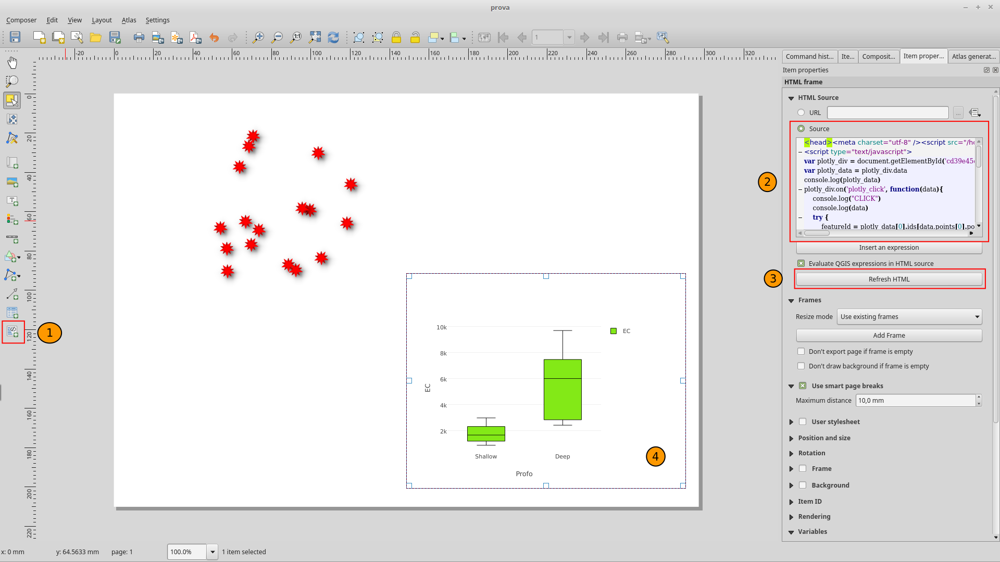

DataPlotly Basic Usage
DataPlotly interface has been designed in order to be simple but, at the same time, complete and with many options and customizations available.
Creating a plot is just easy as it sounds: choose the plot type, x and y
columns, colors, labels, etc and press the Create Plot button.
The plot is immediately shown in the plot canvas.
If you want to change some setting, e.g. the marker color or size, the x
column, go ahead and the hit the Update Plot button: the plot is then
updated in the plot canvas.

Add a Plot
DataPlotly workflow is pretty straightforward:
choose the plot type (1)
set the layer and the field(s) you want to plot (2)
show the plot with the
Create Plotbutton (3). The plot canvas is automatically visible.

You can change some plot settings and click on the Update button to update
the plot with the changes.
If you want to start again, just click the Clean Plot Canvas button and the
plot canvas will be empty.
Multi Plots
DataPlotly allows the creation of many different plots. Plots can be shown on the same plot canvas (overlapping) or each plot can be drawn in different rows or columns (subplots).
Overlapping Plots
You can add as many plots as you want within the same plot view. Plot types can be different and also the source layer can be different.
Observera
results can be very strange depending on the plot type and on the fields you choose. Be careful!
To add other plot just repeat the steps of Add a Plot by choosing different plot types and/or just different layer fields, etc..
In the following picture, same plot type (scatterplot) and different fields of the same layer:


The following pictures show 2 different overlapping plot types (boxplot and scatterplot):

Subplots
You can choose to separate the plots in different plot canvas. It is particularly useful when the scales are very different or when overlapping too many data results in a messy plot canvas.
You just have to choose the plots and the fields as described in the section
Add a Plot but you have to specify the SubPlots parameter from the
combobox and choose if the plots have to be drawn in rows (default parameter)
or in columns.
The following pictures show plots in rows and in columns:


Save Plot
Saving a plot, technically the plot canvas, is very simple. You can choose to save
the plot as a png image or as html file.
Observera
Saving the image as html file will keep the interactivity of the plot. The html file relies on the local DataPlotly installation, and cannot in general be used on other systems.
You just have to click on the correct button and choose the path where to save the image, both static or interactive.

Raw Plot Code
In addition to saving the plot as image or html file (see Save Plot) you can
also copy the raw html code of the plot and embed it somewhere else.
A good place where to copy/paste the raw code is the html frame of the print composer of QGIS.
In order to copy the plot code, after the plot creation, just go in the Raw Plot
tab: here you can see a long string. Right Click on the tab and
choose Select All, then Right Click again and choose Copy (of course
you can use keyboard shortcuts Ctrl + A for select all and Ctrl + C for copy):

Then you have your plot code copied in memory: you just have to choose where to paste it.
In the following example, the html code is pasted in the html frame of
the print composer:
open the print composer and add an
html frame(1)paste the code in the
Sourcespace (2)refresh the
htmlcode (3)results will be shown in the frame (4)


Layer fields tips
Using Expressions
DataPlotly supports all the fields type (integers, floats, text, etc..) and will elaborate the data so that they can be correctly displayed.
Thanks to the QGIS API and custom widget, it is possible to add also Expressions
instead of pure layer fields (e.g. field + 10, field1 * field2, etc).
You can use the Expression editor to add complex expressions (e.g. (field1 + 10) * (field2 * 10))
or you can type the expression directly in the combo box. Expressions are evaluated
on the fly, so if the string is red, then the expression is not valid.

Use only selected features
Another very handy options is to work only with the selected features on the layer.
Just check the Use only selected features check box and only the attributes
of the selected features will be taken.